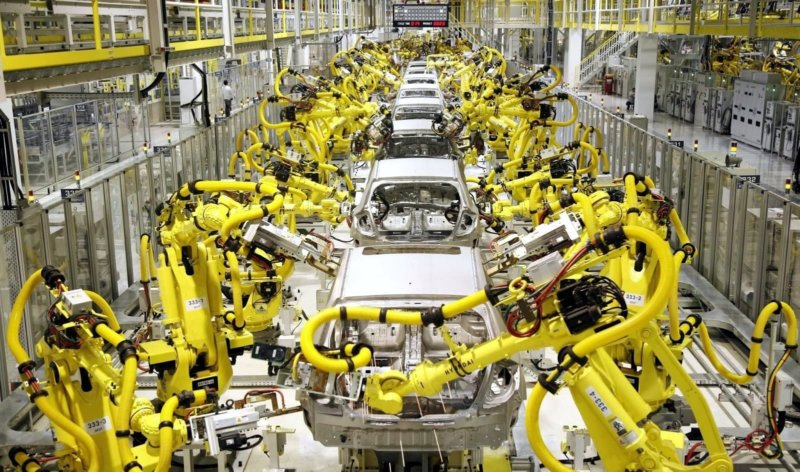
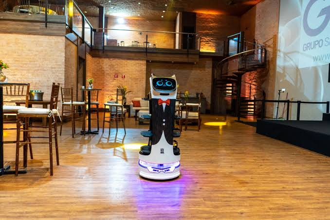
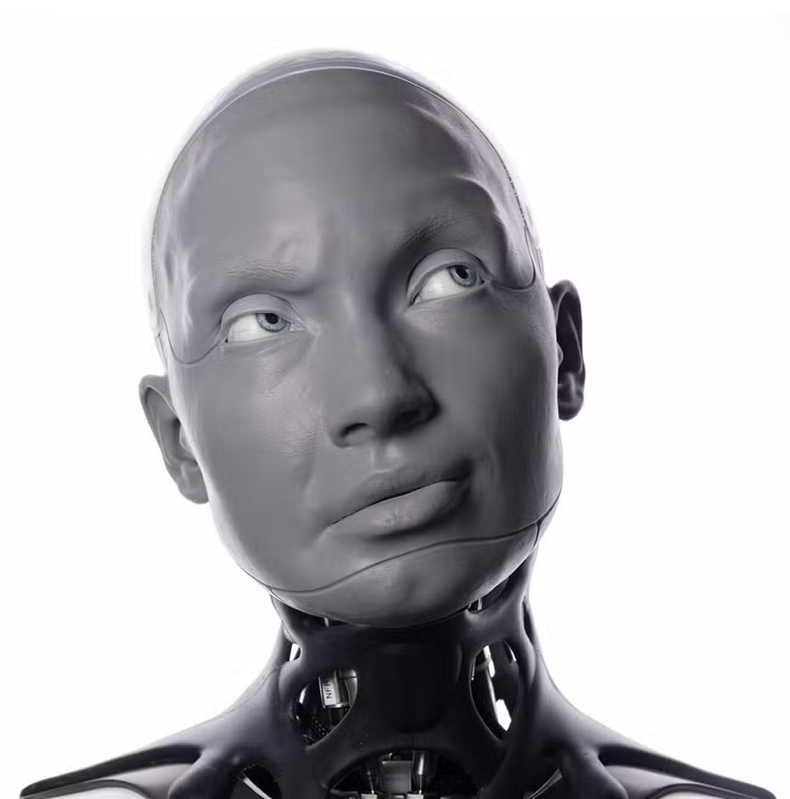
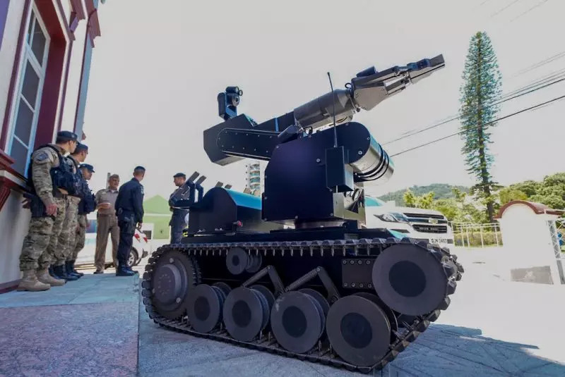
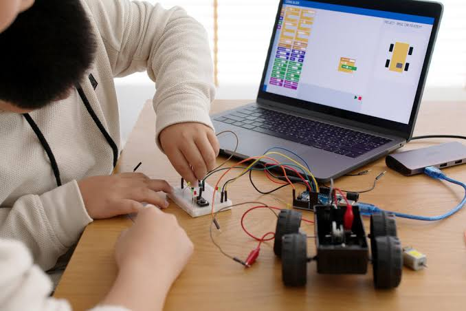

Robôs Industriais
Usados em fábricas para automatizar processos como montagem, soldagem, pintura e embalagem.
1 Braços robóticos
2 Robôs de soldagem
3 Robôs de montagem

Usados em fábricas para automatizar processos como montagem, soldagem, pintura e embalagem.
1 Braços robóticos
2 Robôs de soldagem
3 Robôs de montagem


Projetados para ajudar pessoas em tarefas domésticas, comerciais ou profissionais
1 Aspiradores robóticos
2 Robôs de entrega
3 Robôs recepcionistas
São robôs usados na área da saúde para ajudar médicos, enfermeiros e pacientes. Eles podem tornar alguns procedimentos mais seguros e precisos.
1. Robô cirúrgico
2. Robô de reabilitação
3. Robô de transporte hospitalar

São robôs enviados para lugares perigosos ou difíceis de acessar. Eles ajudam os cientistas a estudar ambientes que seriam arriscados para os seres humanos.
1. Robô espacial
2. Robô submarino
3. Robô de resgate
São robôs que possuem aparência ou movimentos parecidos com os seres humanos. Eles são feitos para interagir melhor com pessoas.
1. Robô recepcionista
2. Robô professor
3. Robô de companhia


São robôs usados para proteção, vigilância e missões perigosas. Eles ajudam a reduzir riscos para pessoas em situações de perigo.
1. Robô antibomba
2. Drone de vigilância
3. Robô de patrulha
São robôs usados para ensinar programação, eletrônica e lógica. Eles ajudam os estudantes a aprender de forma prática e criativa.
1. Carrinho programável
2. Robô de competição
3. Kit Arduino com robô
